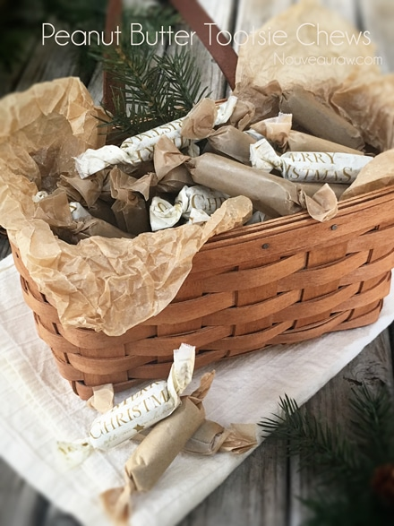

Peanut Butter Tootsie Chews

~ raw, vegan, gluten-free ~
If you are a peanut butter lover, you’re then the reason why I made this candy recipe! So as a peanut butter lover, we need to sit down and talk about the type of peanut butter that I used.
I feel that it is very rare for a person to make peanut butter with raw jungle peanuts. Number one, they are difficult to find and number two, they have a completely different taste from the peanut butter that most of us are used to.
A word of caution when it comes to raw peanuts. “It is possible for raw peanuts to be contaminated with a mold called Aspergillus flavus that produces a potential carcinogen called aflatoxin.
To minimize exposure to aflatoxin, purchase peanuts and peanut products that have been grown, harvested, and processed in the U.S., where there is strict monitoring, and choose Valencia peanuts, which grow in dry climates that are resistant to mold. “ (source)
Raw jungle peanuts are a good option, “With high-quality protein and rich RAW flavor, these exotic, tiger-striped peanuts are a wild heirloom variety — the grandmother of the domestic peanuts we know today. And unlike most peanuts available, this wild heirloom variety is completely free of aflatoxins.”
With that being said, I used fresh ground peanut butter from organic roasted peanuts. Personally, I am ok with that, but if you’re not, you can test out how this recipe would taste made with raw peanuts. But, back to the fresh ground… we don’t eat the kind that comes in a jar. I will either grind it at home or we grind it at the grocery store in their big red peanut machine. Nothing is added, no salt, sugars, etc… just pure peanuts.
For the almond flour, I used fine almond flour, not ground almonds. You can achieve raw fine almond flour by soaking, removing the skins, and dehydrating almonds. Dehydrate them and grind them to a finer flour texture. If you just use ground almonds the candies can turn out grainy. Another way to achieve fine almond flour is too dry the almond pulp after making almond milk. Grind this to a fine powder once dried. If you are not able to do this and 100% raw isn’t your top priority, you can purchase almond flour.
A helpful tip when creating these candies is to use “dry” date paste. I know that sounds a bit confusing so let me explain. When creating the date paste, use the least amount of water needed when getting it to that creamy smooth texture. I provided a link below on how I make my date paste, please review it. Also, make sure that you use fine almond flour, just ground almonds will create a crunchy texture and that’s not what we are after in this recipe.
For packaging ideas, I used a hinged clamshell that you can find online or at any local restaurant store. Twelve candies fit perfectly in them. To wrap the candies, I used brown wax paper (not parchment, too stiff) and tissue paper. I have wrapped over 1,000 pieces of candy this holiday and I have learned what works the best… trust me, I am a certified wrapper now. lol
As far as tissue paper goes, you can use any color or pattern but stay away from full metallic foil papers. They don’t twist close well at all. Some tissue papers have metallic in them (as you see below), these work just fine. When using tissue paper, you will want to use a piece of wax paper on the inside of it so the candy doesn’t stick. The tissue paper is just decorative. Ok, I have loaded you with plenty of information. It’s now time to get busy in the kitchen! Many blessings and have fun. amie sue
Yields 48 (2” candies)
- 2 cups date paste
- 1/2 cup fine almond flour
- 3/4 cup fresh ground peanut butter
- 1/2 tsp Himalayan pink salt
Preparation:
Create the candy batter:
- Remove the pits from the dates as you put them in the measuring cup.
- Be sure to inspect each date as you tear it in half to remove the pit. Mold and insect eggs can infect dried dates. I don’t mean to gross you out, you just need to be made aware of this.
- Place the date paste, almond flour, peanut butter, and salt in the food processor fitted with the “S” blade. Process until it turns into a creamy paste.
Fill the piping bag:
- I used a strong silicone piping bag to handle the thickness of the batter, click (here). I used the piping tip Ateco #808.
- While holding the bag with one hand, fold down the top with the other hand to form a cuff over your hand.
- Fill the bag 1/2 full. If you overfill the bag, the excess batter may squeeze out the wrong end not to mention that you will have less control of the bag when piping.
- Close the bag by unfolding the cuff and twisting the bag closed. This forces the batter down into the bag.
- “Burping” the bag: Make sure you release any air trapped in the bag by squeezing some of the batter out of the tip into the bowl. This is called “burping” the bag.
- If you don’t remove the air bubbles they will come out while you are piping your straight line and cause blurps and breaks. Best to create a seamless line.
Piping:
- Hold the piping bag tip about 1/4″ above the non-stick sheet, at about a 22-degree angle (half of a 45 ), and slowly pipe the batter from one edge of the dehydrator tray to the other.
- Keep constant pressure on the piping bag as you squeeze out the paste. This will ensure an even thickness of the line.
- After each completed line, stop and retwist the piping bag, working all paste towards the tip. This will eliminate air bubbles in the bag and give you a solid grip.
- Remember: It doesn’t have to be perfect. Just have fun and if you make a mistake, scoop it up, place back in the bag and do it again.
Dehydrate & store:
- Place the tray in the dehydrator and dry at 145 degrees (F) for 1 hour, then reduce to 115 degrees (F) for 16-24 hours.
- Once cooled, cut into 2” lengths and wrap in squares of wax paper.
- I keep mine stored in the fridge for freshness but they can be left out at room temp.
- These candy chews won’t be hard or crunchy.
Culinary Explanations:
- Why do I start the dehydrator at 145 degrees (F)? Click (here) to learn the reason behind this.
- When working with fresh ingredients it is important to taste test as you build a recipe. Learn why (here).
Substitutions:
One of the greatest joys when creating raw food recipes is experimenting with different ingredients… a practice that I highly encourage. Daily I get questions regarding substitutions. Of course, we all might have different dietary needs and tastes which could necessitate altering a recipe. I love to share with you what I create for myself, my husband, friends, and family. I spend a lot of time selecting the right ingredients with a particular goal in mind, looking to build a certain flavor and texture.
So as you experiment with substitutions, remember they are what they sound like, they are substitutes for the preferred item. Generally, they are not going to behave, taste, or have the same texture as the suggested ingredient. Some may work, and others may not and I can’t promise what the results will be unless I’ve tried them myself. So have fun, don’t be afraid, and remember, substituting is how I discovered many of my unique dishes.
© AmieSue.com